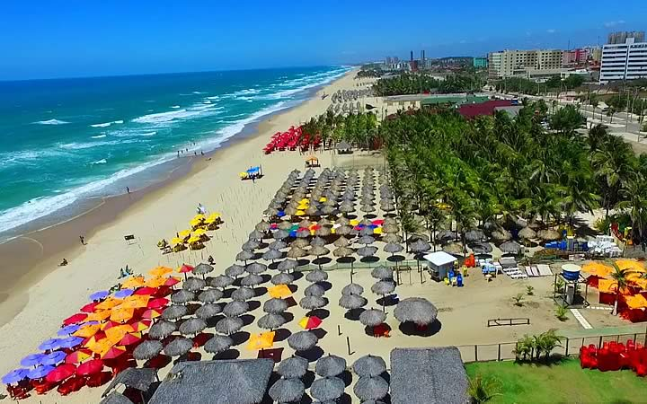
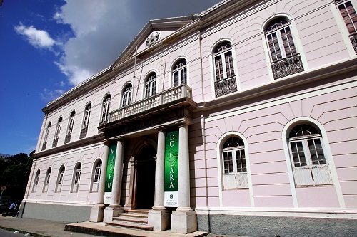
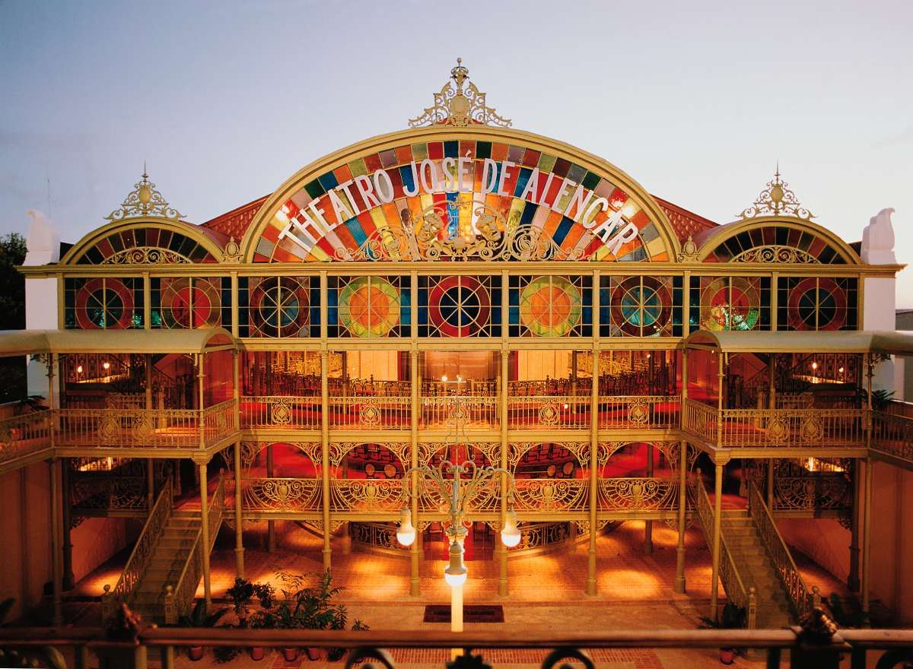

Fortaleza é a capital do Ceará, estado localizado na região Nordeste do Brasil. A cidade é conhecida por suas praias, com falésias vermelhas, palmeiras, dunas e lagoas. Fortaleza é considerada uma metrópole e, com mais de 2,6 milhões de habitantes, é uma das capitais mais populosas do Brasil. Então, nada melhor do que passar uma boa temporada de férias em fortaleza e conhecer um dos grandes cenários do Ceará.
» Praias
Se você gosta de caminhar e olhar o por do sol com os pés na areia as praias de Iracema, Meireles e Mucuripe, as mais vistadas da região, serão do seu interesse. Localizadas na Avenida Beira Mar, urbanas e com bastante movimentação, porem não indicadas para banho. Outra opção é a Praia do Futuro, mais afastada da região central, que conta ainda com boa infraestrutura e águas com boas condições para banho.
Normalmente os turistas que visitam Fortaleza contratam passeios para praias próximas à cidade, sendo uma das atividades mais realizadas pelos visitantes, no entanto, muitas dessas praias, e outras atrações, estão localizadas em outras das cidades turísticas para conhecer no Ceará.
» Centro Dragão do Mar de Arte e Cultura
O Centro Dragão do Mar de Arte e Cultura, ponto de encontro da arte e cultura cearense é apontado como um dos maiores centros culturais do Brasil. Conta com biblioteca, planetário, salas de cinema, teatro, auditórios, espaço para exposições e também uma incrível área verde, onde são realizadas apresentações musicais em épocas festivas, como Festas Juninas.

» Mercado Central
Inaugurado em 1998 e um dos pontos turísticos mais visitados de Fortaleza, o Mercado Central possui mais de 500 lojas distribuídas em cinco pavimentos, com uma grande variedade de produtos e lembranças. Considerado o maior mercado do nordeste, é um dos pontos turísticos de Fortaleza para comprar variedade de produtos regionais. Entre eles os bordados, rendas, artesanatos, cachaças e castanhas.

» Museu do Ceará
Criado em 1932, o Museu do Ceará foi a primeira instituição museológica oficial do Estado. Está sediado no ‘Palacete Senador Alencar’, edifício histórico concluído em 1871 que mantém as características arquitetônicas originais. Seu acervo é formado por mais de sete mil itens como quadros, móveis, peças arqueológicas e artefatos indígenas, e dialoga com episódios e movimentos marcantes da História do Brasil como a escravidão e a luta abolicionista.
Através de cursos de capacitação e oficinas, tem atuado como importante centro de reflexão sobre a História local e regional. São cerca de 13 mil peças entre elas pinturas, fotografias, relíquias indígenas e cordéis. A força da referência regional pode ser admirada na primeira planta da capital e até no punhal usado por Lampião. É um ponto turístico em Fortaleza repleto de arte e cultura, com opção de visita guiada.
» Theatro José de Alencar
Theatro José de Alencar , localizado na cidade de Fortaleza, no Ceará é referência artística, turística e arquitetônica no país, além de ser tombado pelo Instituto do Patrimônio Histórico e Artístico Nacional. Enquanto teatro-monumento, conta com seleta programação cênica e diversificada pauta de atividades sócio-culturais e artísticas.
Além disso, por meio das construções e equipamentos anexos, é considerado um grande espaço aglutinador de pesquisa, formação, produção e difusão artística. As pinturas no teto são realçadas pela vivacidade dos vitrais. Dos pontos turísticos de Fortaleza é nesse que tudo respira teatro. O pátio interno e jardim suportam apresentações ao ar livre. O jardim, projetado pelo paisagista Burle Marx, possui mais de 50 categorias de plantas.